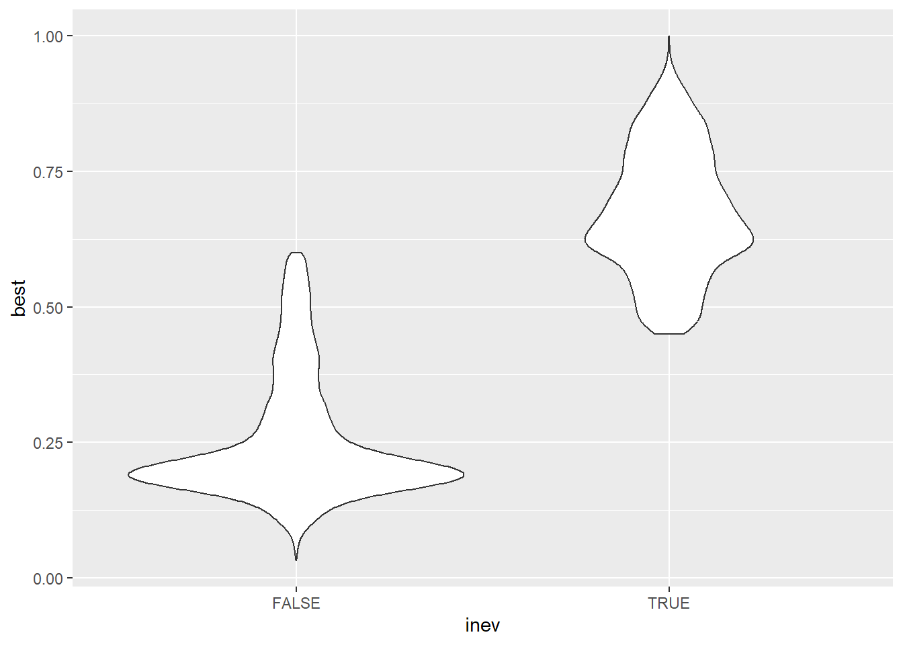

# First thing we will do to evaluate distributions is subset `template` so that we can distinguish between clicks inside events and those not inside events
t <- template %>%
mutate(inev=case_when(type==101 ~ TRUE, .default=FALSE))
# Then get the best match score for each click across all the templates
t <- t %>%
select(db, UID, type, ends_with("thresh"), inev) %>%
mutate(best=pmax(template$Pd_1_thresh, template$Pd_2_thresh, template$Pp_thresh,
template$Ksp_thresh))
# Then join with species and eventId so we can look at distributions across individual events
j1 <- nbhf_clicks %>%
distinct(species, db) %>%
mutate(db = str_remove(basename(db), " - Copy.sqlite3"))
t <- t %>%
left_join(j1, by="db")
t <- nbhf_clicks %>%
select(UID, eventId) %>%
right_join(t, by="UID")Thesis Results Notebook
Notebook organization
Results are organized in association with the methodological step which generated them.
The Table of Contents reflects this organizational scheme
1. Making Events
First step of the study was to define events. This is associated with three constituent methodologies.
- Selection of template clicks Section 1.1
- Using PG to generate MTC scores Section 1.2
- Using custom R script to define events Section 1.3
Selection of Template Clicks
Methodology
- Chose template clicks representing high-quality clicks
- All are saved in the
identidrift::template_clicksdata object Section 4.2 - There were 4 total, 2 for Dall’s porpoise and 1 for each other species.
Results
This is important for those who are interested in seeing the exact profiles of these types of signals and could be helpful for people studying NBHF clicks in other regions, to compare to what we consider to be a high-quality click signal
MTC Module PG
Methodology
- Used MTC module to generate match scores for all database clicks.
- The match scores are saved in the
identidrift::templatedata object.
Results
Custom event definition
Methodology
- Used custom script to construct the events. All the events were saved to a new database of training data.
- The training data is saved in the
identidrift::nbhf_clicksobject. - Clicks not included in the training set were not used for any further analysis.
Results
- What was the recall and precision?
I would like to make some comparisons in the distribution of match scores across clicks that were included in events, versus those that did not get included.
Approach: evaluate distribution of match scores for all clicks that are not included in events that made it into the training set. - Use
templatedata to plot this distribution.False negatives – This is unlikely as the thresholds decided upon were chosen to set an intentionally low bar, and we performed a manual review to determine that no manually labelled events were being excluded from the automatically defined events when choosing these thresholds.
Clicks not included in events are, by and large, poor template matches.
These distributions show, probably with a significant difference, that clicks not included in events have lower match scores than those included in events. Suggesting that the script did a good job of placing highly matched clicks in events.
Warning: Removed 134 rows containing non-finite values (`stat_ydensity()`).
There are however some high-scoring clicks that did not get included into events, likely because they were isolated and thus did not meet the criteria for an event. To get a sense of just how many high quality clicks were excluded, lets look at the percentile for the threshold value among the not-included clicks
Warning: There was 1 warning in `mutate()`.
ℹ In argument: `pctile = map_dbl(...)`.
Caused by warning in `.x$best < threshVal`:
! longer object length is not a multiple of shorter object lengthWe see from this that
for harbor porpoise, 13.2723371% of non-event clicks were above the threshold.
for Dall’s porpoise, 0.5567271% of non-event clicks were above the threshold.
for Kogia, 7.826087% of non-event clicks were above the threshold.
Did our methods fail to define any events, that should have been included i.e. did it result in any False Negatives?
Did our methods identify any False Positives?
2. Clustering
Next step of the study was to cluster to discover associations between events and/or clicks indicative of species classification. Broken down into two steps:
- Use PAMpal to extract click features Section 2.1
- Cluster based on event Section 2.2
- Density cluster based on clicks Section 2.3
- Density cluster, within species, based on clicks Section 2.4
Extracting click features from events and comparing species
Methodology
- From the database with the training events labeled, we then used PAMpal to extract standard set of features from each click.
- What are the average or generalized spectra and concatenated spectrogram for each different species? In other words, what are the patterns that unify each species and distinguish it from other species?
- What are the distributions of the standard click features across all the groups?
- The training data is saved in the
nbhf_clicksobject Section 4.1
Results
Cluster based on event
Methodology
- Used nmds with community ecology tactics
Results
- Does clustering suggest that there are differences between species?
- Does clustering suggest that, for an individual species, there are differences between events?
Density Cluster clicks
Methodology
- Used
densityClustwithrhoanddeltachosen in advance or manually chosen?
Results
- Does clustering suggest that there are differences between species?
Density Cluster clicks, by species
Methodology
- Used
densityClustwithrhoanddeltachosen in advance or manually chosen?
Results
- Does clustering suggest that, for an individual species, there are differences between events?
Model classifier
IN PROGRESS
Data Appendix
nbhf_clicks
template
You can see, this data includes for each UID (26491 total):
- match scores, across all 4 templates
_threshcolumns appear to be copies of_matchcolumns- a
typefield which I think is related to the click classifier label given in PG - The number of clicks in the training data set is 4685 and the number of clicks in the
templatedataset havingtype==101is 4748. There is obviously a small discrepancy here but still leads me to conclude that filtering thetemplatedata for clicks withtype==101is shorthand for filtering clicks included in events. - This can be verified by examining counts, by event
glimpse(template)Rows: 26,491
Columns: 13
$ db <chr> "Bangarang_Dalls", "Bangarang_Dalls", "Bangarang_Dalls", "…
$ UID <chr> "247000001", "247000002", "247000003", "247000004", "24700…
$ type <int> 3, 3, 7, 2, 6, 7, 3, 3, 7, 7, 3, 7, 3, 7, 7, 7, 3, 2, 6, 7…
$ UTC <dttm> 2015-06-13 16:17:46, 2015-06-13 16:17:46, 2015-06-13 16:1…
$ Pd_1_thresh <dbl> 0.07701931, 0.05437314, 0.09006974, 0.04662150, 0.05759609…
$ Pd_2_thresh <dbl> 0.05137087, 0.08553706, 0.08983315, 0.04329270, 0.08922974…
$ Pp_thresh <dbl> 0.06901474, 0.08131630, 0.12873916, 0.04574575, 0.09179504…
$ Ksp_thresh <dbl> 0.07100555, 0.10857034, 0.13101517, 0.06128239, 0.05089132…
$ Pd_1_match <dbl> 0.07701931, 0.05437314, 0.09006974, 0.04662150, 0.05759609…
$ Pd_2_match <dbl> 0.05137087, 0.08553706, 0.08983315, 0.04329270, 0.08922974…
$ Pp_match <dbl> 0.06901474, 0.08131630, 0.12873916, 0.04574575, 0.09179504…
$ Ksp_match <dbl> 0.07100555, 0.10857034, 0.13101517, 0.06128239, 0.05089132…
$ BinaryFile <chr> "Click_Detector_Click_Detector_Clicks_20150613_161746.pgdf…